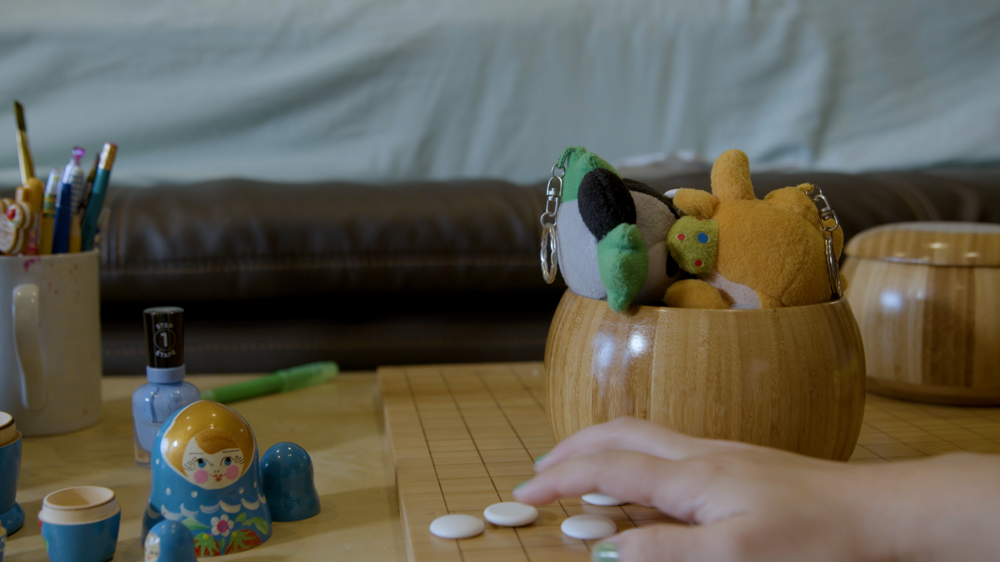
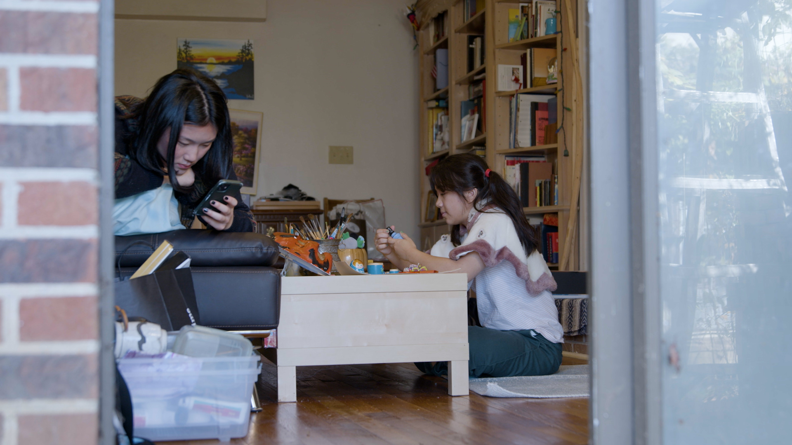
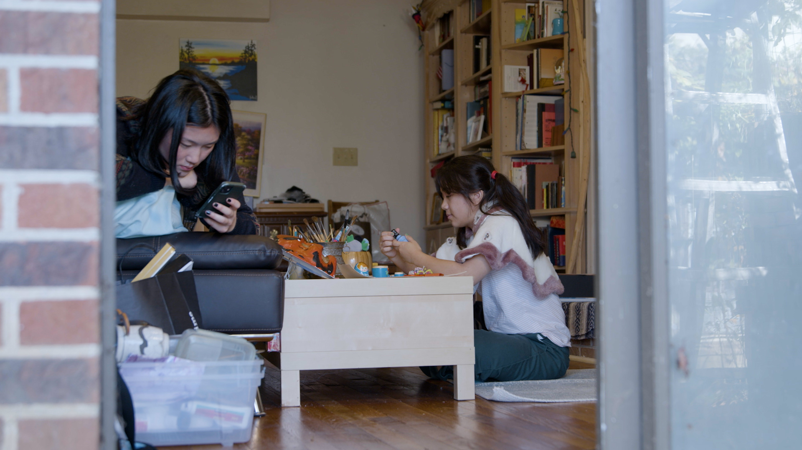
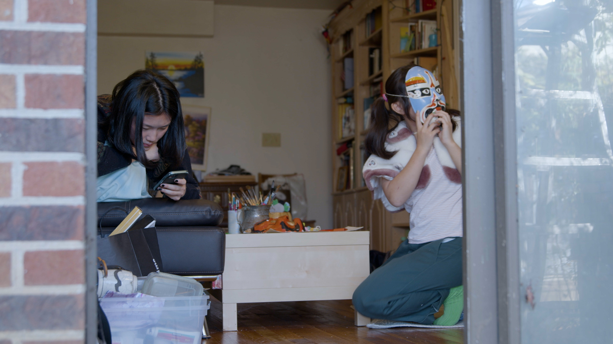
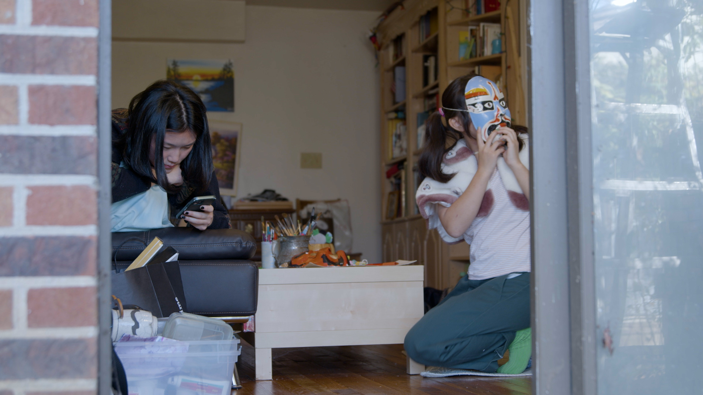
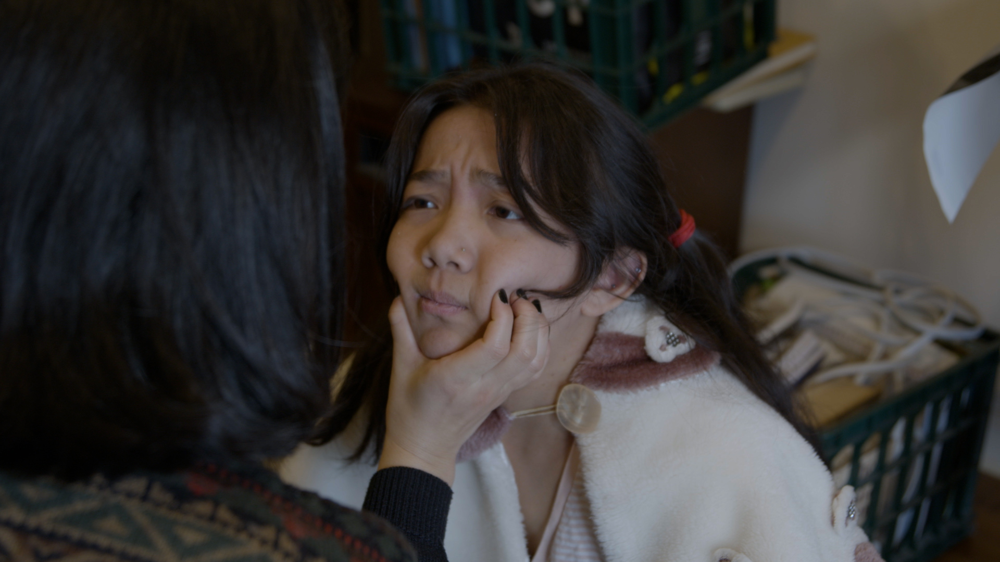
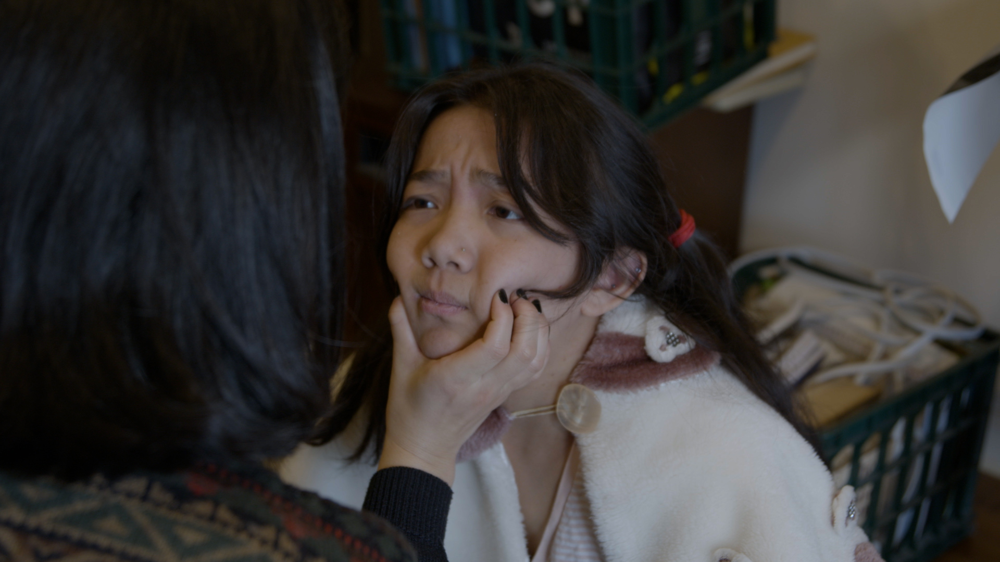

Me and My Babysitter
Digital, blackmagic HD
How do we learn to do bad things? And how does our knowledge of evil inform our adolescence? These questions are explored in this film through learned transgressions. In a way, by learning how to be cruel, a girl grows up.


 
 
 
